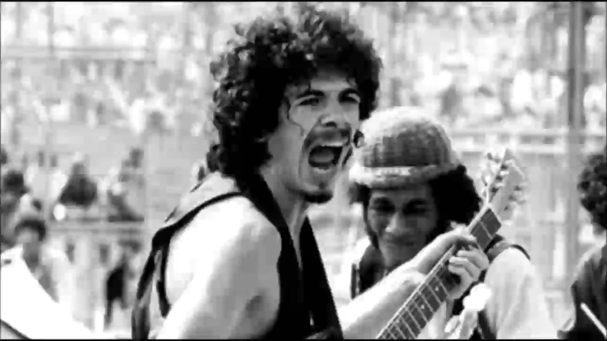
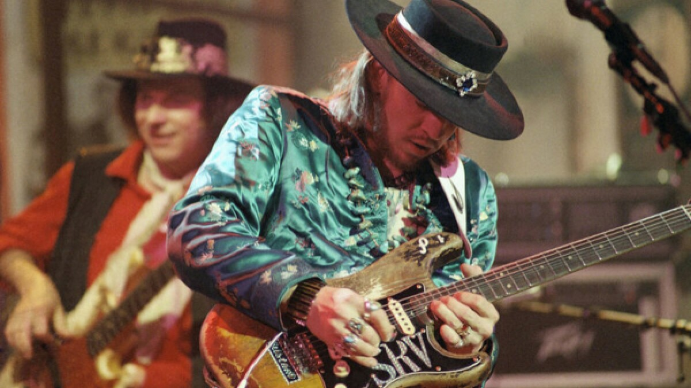

Guitar Hub Stories
Get to know some of the best stories of famous guitarrists
- Carlos Santana in Woodstock
 Carlos Santana was a relatively unknown musician when he arrived at Woodstock in 1969. He had just released his debut album, and although it had received some critical acclaim, it had yet to gain widespread recognition.
As he stepped out onto the stage at Woodstock, he felt a mix of nerves and excitement. The crowd was massive, stretching out in front of him as far as the eye could see. He took a deep breath and began to play.
The first notes of his guitar echoed out into the air, and as he played, he could feel the energy of the crowd rising. It was as if a wave of enthusiasm was washing over him, and he was riding it, his fingers dancing across the strings of his guitar.
As he played, he felt a sense of connection with the audience that he had never experienced before. He could see people dancing, singing along, and swaying to the music. It was a moment of pure magic, and Carlos knew that he was part of something truly special.
He played a number of songs from his debut album, including "Soul Sacrifice" and "Jingo." The crowd responded with wild enthusiasm, and as the set went on, Carlos felt himself becoming more and more energized.
By the time he finished playing, the crowd was on their feet, cheering and clapping. Carlos Santana had become an instant legend, and his performance at Woodstock would go down in history as one of the greatest musical moments of all time.
From that moment on, Carlos Santana's career skyrocketed. He continued to produce music that inspired and touched people's hearts, earning him accolades and fans around the world. But he never forgot that moment at Woodstock, when he felt a deep sense of connection with the world, and the power of music to bring people together.
Steve Ray Vaughan - The soon died prodigy
Steve Ray Vaughan was a guitar prodigy from a young age, picking up the instrument when he was just seven years old. He was a self-taught musician who played with a unique style that blended blues, rock, and jazz. By the time he was in his early twenties, he had formed his band, Double Trouble, and was making a name for himself in the Austin music scene.
It wasn't long before Vaughan's talent caught the attention of music industry executives, and he was offered a recording contract. In 1983, he released his debut album, "Texas Flood," which showcased his incredible guitar playing and soulful vocals. The album was a critical and commercial success, and it established Vaughan as a rising star in the music world.
Over the next few years, Vaughan released several more albums with Double Trouble, including "Couldn't Stand the Weather" and "Soul to Soul." He became known for his passionate live performances, often playing his guitar until his fingers bled. He won several Grammy Awards and was hailed as one of the greatest guitarists of his generation.
However, Vaughan struggled with addiction throughout his career. He was known to drink heavily and use drugs, and his substance abuse put a strain on his relationships and his health. Despite his struggles, he continued to make music and tour, and he remained a beloved figure in the music world.
Tragically, Vaughan's life was cut short in 1990 when he died in a helicopter crash. He was on his way back to Texas after performing at a concert with Eric Clapton in Wisconsin. Vaughan was just 35 years old at the time of his death, and his passing was felt deeply by his fans and fellow musicians.
In the years since his death, Vaughan's legacy has only grown. He has been inducted into the Rock and Roll Hall of Fame and has inspired countless musicians with his incredible guitar playing and heartfelt music. Though his life ended too soon, his contributions to music will never be forgotten.